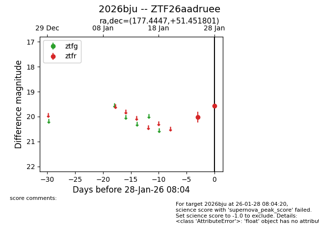
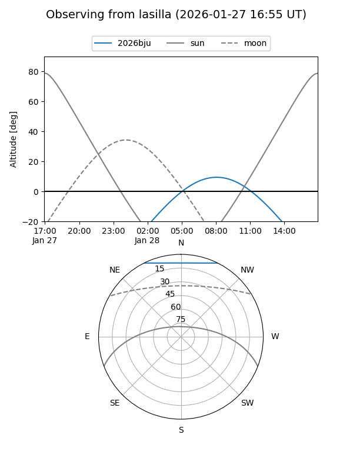
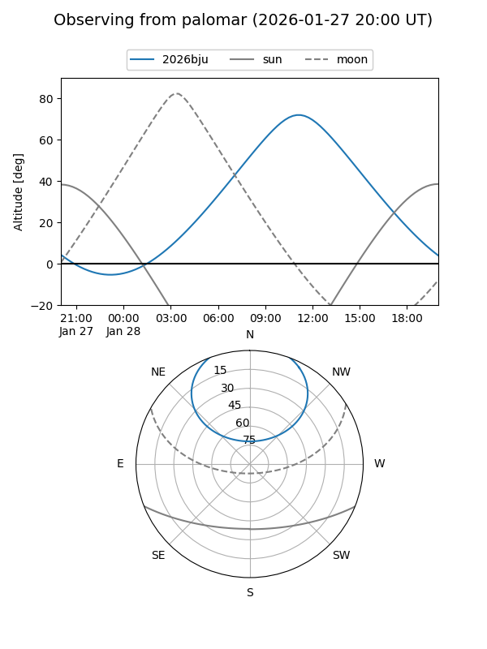

2026bju
Target 2026bju at 2026-01-28 08:06
Aliases and brokers:
FINK: link
Lasair: link
ALeRCE: link
TNS: link
YSE: link
alt names
ZTF26aadruee (ztf,fink_ztf)
2026bju (tns,yse)
Coordinates:
equatorial (ra, dec) = 177.4447,+51.45180
equatorial (HMS+DMS) = 11:49:46.72,+51:27:06.48
galactic (l, b) = (144.3577,+63.03488)
Flags:
Photometry:
last ztfr=19.57
2 ztfr detections
Lightcurve

Visibility


Additional plots